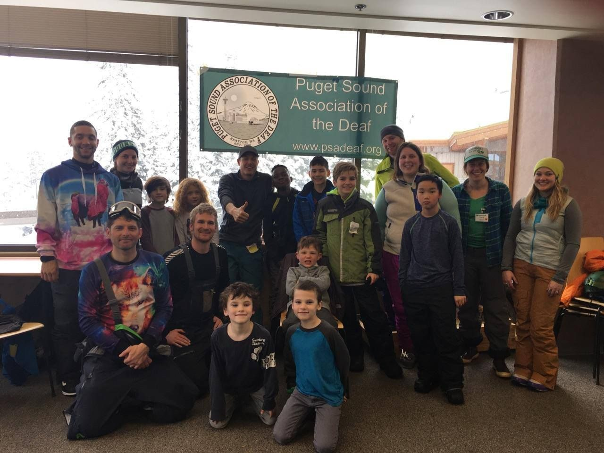

Give to PSAD.
Empowering the diverse Deaf community in the Salish Sea region by fostering cultural pride, promoting community engagement, and supporting leadership development.
What your gift supports
- Social and field trip events
- Children's camps and activities
- Cultural awareness events
- Senior citizen activities
- Language acquisition

Thank you for considering PSAD
Donations from generous supporters like you enable us to host culturally enriched events, workshops, and support programs tailored to the unique needs of our community.
By contributing, you're joining us in fostering connections, providing resources, and supporting the collective empowerment of our community to advocate and educate the general public about equal access.
Donate by mail
Puget Sound Association of the Deaf
2407 1/2 NW 60th Street
Seattle, WA 98107